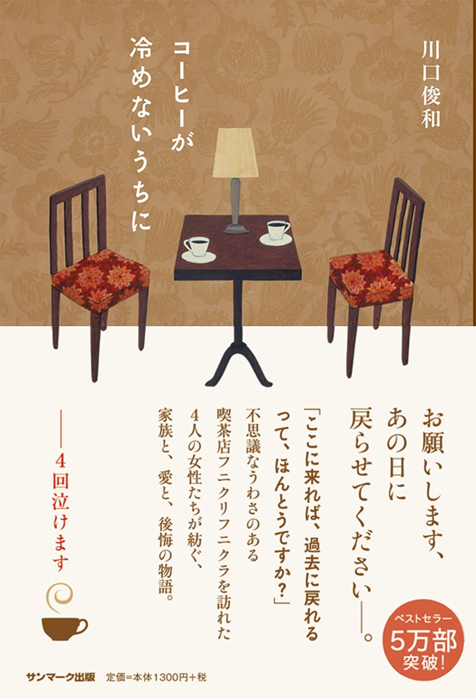
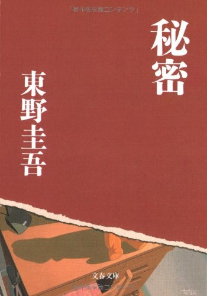
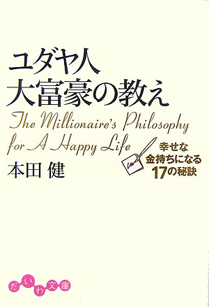

君たち、漫画から漫画の勉強するのはやめなさい。一流の映画をみろ、一流の音楽を聞け、一流の芝居を見ろ、一流の本を読め。そして、それから自分の世界を作れ。
私の半生において、一人の人間が、血を注ぎ、命を削り、創り上げた作品が及ぼした影響は、計り知れません。
その中でも、私が今でも机の側に置く三つの本を紹介させて頂きます。

コーヒが冷めないうちに
店内はシェードランプで照らされたサピア色に染まる、人気の少ない路地裏の地下に掘り込む喫茶店の名前は『フニクリフニクラ』。この店が決定的に他と違うのは、過去に戻れる席がある事である。この話は、噂を聞き入れ、『フニクリフニクラ』に訪れた四人の女の心温まる話である。
あなたがもし過去に戻れるなら何をするでしょうか？ 少なくとも彼女たちは、大なり小なり全ての人間が持つ後悔に対して、一番大事な事は、事実の『内容』ではなく『捉え方』であるんだという事を知ります。もし、あなたが自身の過去の色に不満があるなら、この一冊を通して、もう一度見つめ直して欲しいと願います。
秘密
予感めいたものなど、何ひとつなかった。と始まる彼の冒頭は、彼の非凡さを表す。交通事故でなくなった妻の心が、娘の体に入るというありきたりな展開が現実に起きたらどうなるか？ 東野圭吾は、忠実に彼らの心情と性を書き綴り、読み手に共感を生み出す。
東野圭吾氏は、彼ら二人に“秘密”の答えを導き出させます。でもこれは、あなたがもし“秘密”に直面した時の答えであると私は思いません。"秘密"の答えを導いた彼らには力強さを感じます。あなたにもこの力強さを導いて欲しいと願います。

